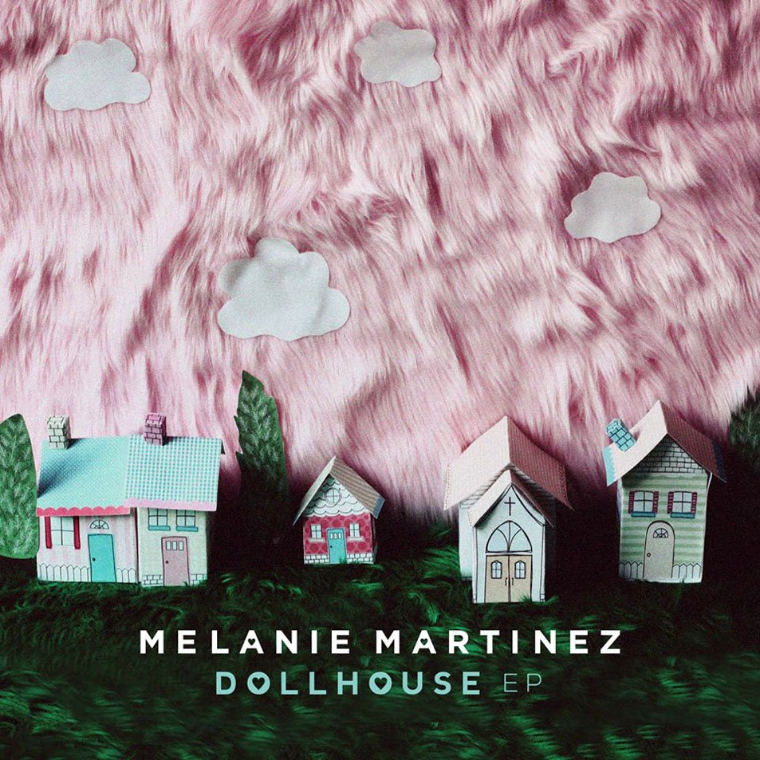

2013–2014: Dollhouse

After the show, Martinez began working independently on original material, which she says she spent the majority of 2013 writing. She released her debut single,
"Dollhouse", on February 9, 2014.
She later compared the song's story to Edward Scissorhands, saying "[It's] the perfect home with the perfect lawn and they all look the same. But behind each house
there's a screwed up group of people who are hiding behind wealth and perfection." Martinez also released a music video for the track, which was fan-funded by an Indiegogo
page created by Martinez, and hair, makeup, and shooting were all done by friends of hers. The song was produced and cowritten by NYC songwriting duo Kinetics & One Love.
On April 7, 2014, Martinez signed to Atlantic Records and announced she would tour. She released her debut EP, Dollhouse, on May 19, 2014. The only single from the EP,
"Carousel", was also certified gold by the Recording Industry Association of America (RIAA), and featured in a preview for FX's miniseries American Horror Story: Freak Show.
The song reached number nine on the Alternative Digital Songs chart. A video for the track was also released.